Table Of Contents:
Main Plot Summary-
Spoiler Warning!
Hunter X Hunter is about how a boy from Whale Island called Gon Freecs, goes on a journey to become a Hunter. His father, Ging became a Hunter and left Gon with Ging's cousin/sister-in-law, Mito (depends on which version of the anime you watch, there's one from 1999 and 2011). I'm just going to go with Mito being Ging's cousin but that doesn't really matter because Mito in Gon's eyes is his mum.
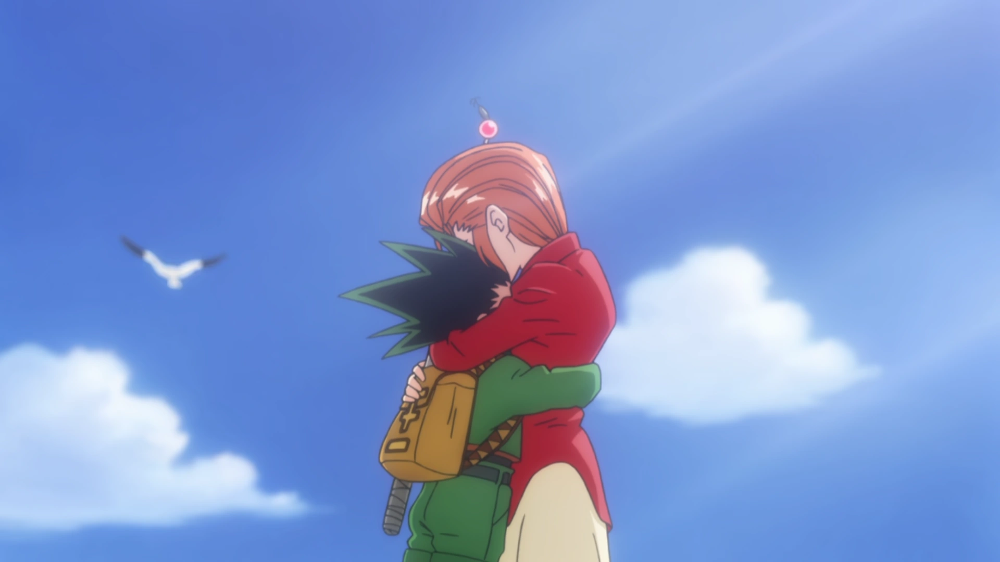So Gon sets out on his journey to take the Hunter exam and leaves Whale Island and Mito, to become a Hunter like his father, Ging with the hopes of knowing why his father left him when he was 2 years old.
Hunter Exam
On the way to the place where the Hunter Exam is held, Gon undergoes a trial of sorts on the ship heading there, and makes friends with: Kurapika, the last member of the Kurta Clan (the Kurta Clan are known for their scarlet eyes, Kurapika's whole clan was massacred with every single scarlet eye stolen by the Phantom Troupe (also know as the Spiders), criminal organisation who we get to know later) and Leorio (wants to become a Hunter for money, with enough to become a doctor/physician who can give free treatment to the poor).
So Gon, Kurapika and Leorio set out on their journey to take the Hunter exam.
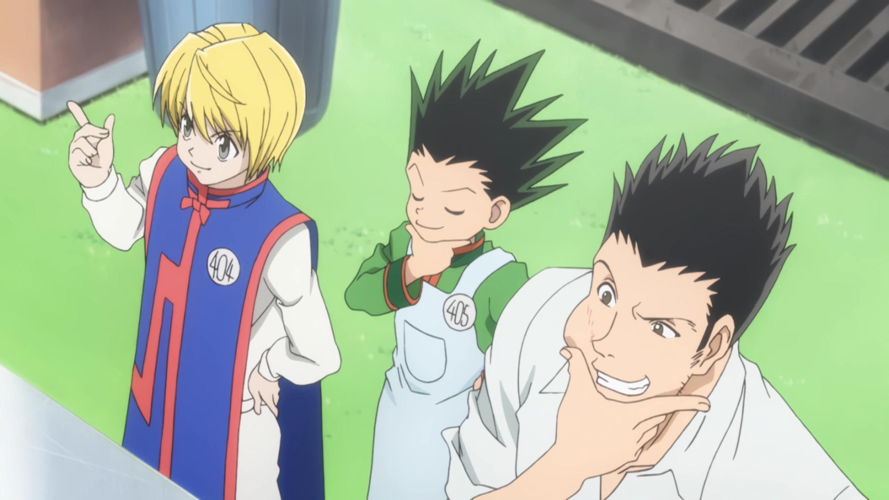I'm not going to go into too much detail here. I'll probably add more detail when I do a rewatch of HxH or reread the manga again but just know that:
- Gon becomes close friends with Killua, the heir to the Zoldyck family who are known to be elite assassins due to how they are both around the same age, 11-12 years old.
- Gon has a debt to settle with Hisoka (he let Gon pass one of the stages of the Hunter exam by giving him a badge needed to pass: Gon didn't feel like he earnt it)
- Hisoka let Kurapika win a fight after telling Kurapika about some clues about the Phantom Troupe
- Gon, Kurapika and Leorio all become Hunters (though Gon is relunctant to accept his win because of Hisoka)
- Killua at the final stage of the Hunter exam, faces his elder brother, Illumi who was in disguise the whole time. Illumi is both (1) under orders from their father to bring Killua home and stay an assassin.
(2) Illumi's own reasons to want to control Killua
- Illumi manipulated Killua into thinking that if Killua stayed with Gon, he would eventually kill Gon with Killua's only purpose in life to be killing.
- Killua gives up on becoming a Hunter, killing one of the exam participants and runs back home because of Illumi's manipulation.
- Hisoka, Illumi become Hunters without too much trouble (reason revealed later! Nen!)


Zoldyck Family
So Gon, Kurapika and Leorio decide to immediately set off to Killua's family home on Kukuroo Mountain to bring back Killua.
They have to undergo a series of challenges including:
- passing through the Testing Gate (7 sets of giant doors which weigh tons)
- 1st set of doors weighs 4 tons, 2nd set weighs 8 tons, 3rd set weighs 16 tons, etc.
- Fun fact: while in both anime/manga Gon, Kurapika and Leorio eventually are able to pass through the doors, in the manga only Leorio could open up to the 2nd set
- when Killua came back home from the Hunter exam, he was able to open the 5th set of doors which was 64 tons
- Mike, the hunting beast that heeds the orders of Silva Zoldyck, the current head of the Zoldyck family and Killua's dad
- Fun fact: not even Gon who is good with animals was able to see any sense of life the eyes of Mike
- facing off against the Zoldyck family's butlers like Canary (an apprentice butler), Gotoh, etc.


Eventually, Killua had a talk with his dad, Silva who let Killua leave to become stronger and made a promise to never betray his friends (kinda weird to me but ok lol). So Killua joins back up with Gon, Kurapika and Leorio and they go their separate ways. Gon and Killua head off to get stronger together with Gon hoping to get back at Hisoka for the badge while Killua just wants to hang out with Gon, his best friend (awww). Kurapika goes off on his revenge quest, trying to recover the eyes of his clan and Leorio goes to medical school.
Oh and before they part they promise to meet up in Yorknew City on September 1st because:
- in the "fight" in the last stage of the Hunter exam between Kurapika and Hisoka, Hisoka told Kurapika that he would reveal information about the Phantom Troupe to Kurapika in Yorknew City on Sep 1st
- Gon wanting to get back at Hisoka, also wants to be in Yorknew City
- Killua and Leorio tag along because they're best buds (guys I'm crying this is so wholesome)
Heaven's Arena

So we're back with Gon and Killua who want to get stronger after realising their weakness and they want to earn more money along the way.
Killua suggests that they head to Heaven's Arena: a huge skyscraper, cyberpunk esque building where with each floor fighters battle and whoever wins gets to move up to the next 10 or so floors (whoever loses has to go down 10 stories)
For the first 199 floors, competitors are able to earn prize money in fights with no weapons, after reaching the 100th floor they get their own private room (ooh fancy).
Killua when he was 6 yrs old, was able to reach the 199th floor and quit, spending it all on snacks (lowkey what I would've done too but with pokemon cards)
So Killua and Gon begin climbing the Heaven's Arena, casually beating adults with their bare fists lol. Along the way, they take notice of another kid who is doing the same thing, Zushi, a martial arts student trained by a messily dressed guy, Wing.
Gon and Killua are interested in Zushi's power, in which Wing teaches them what 'Nen' is. Killua knows that Wing was lying to them about it...
The 200th floor offers no prize money, weapons are allowed, each fighter has 90 days to prepare and there are 21 Floor Masters (highest ranked in the Heaven's Arena) who get their own floor from 230th to 250th floors. Other rules:
- if you lose 4 matches from 200th floor onwards you are disqualified
- if you win 10 matches, you get the right to challenge (and if you win you become) a floor master
- oh and you get a real nice penthouse at the top of Heaven's Arena if you win the Battle Olympia
Anyways, Gon and Killua once they reach the 200th floor are blocked by Hisoka's aura and need to register by midnight in order to register to fight (not get kicked out). Wing, Zushi's teacher offers to help out and teach them real 'Nen'.
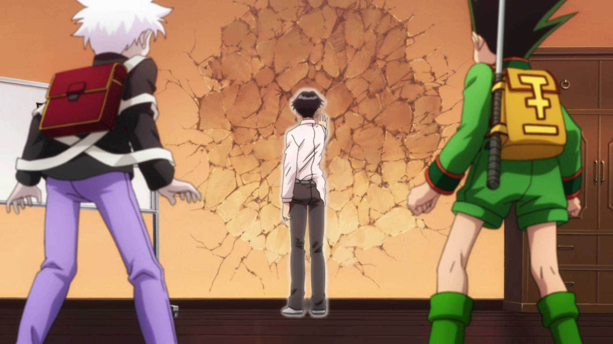
So Wing opens Gon's and Killua's aura nodes forcefully (can be opened naturally which is safer since if you're not able to use Ten after having your aura nodes opened forcefully you can die or become like Gido, Sadaso).
So Gon and Killua are able to reencounter Hisoka and are able to pass him and register to fight with Gido, Sadaso, etc. Not to linger for too long, I'm just going to sum up:
- Gon fights Gido but loses to him because of his lack of experience with Nen. However, Gon being a Nen prodigy was able to use Zetsu to dodge most of Gido's attacks (Gon was able to naturally pick up on Zetsu with getting Hisoka's badge in the final stage of the Hunter exam).
- Gon is heavily injured (but somehow recovers a 4 month injury in only 1 month), Wing makes him promise to not use Nen for 2 months. This counts towards watching a match between Hisoka and Kastro (which would prove helpful for Gon with his future fight with Hisoka).
- Gon keeps this promise while Killua stops Gido, Sadaso, etc. from playing anymore tricks on them by scaring them with his assassin skills. Killua automatically wins his match because Sadaso forfeits (he be scared, I would be too of Killua lol).
- Gon and Killua go to win their matches because they're just that goated (well because of Gon's situational awareness using his surroundings and Killua being trained under torture to be able to endure electricity vs Riehlvelt).
- Gon preps for his fight against Hisoka. Not able to win but is able to land good hits which allows him to give back the badge to Hisoka. Gon's satisfied
- Oh and a whole bunch of Nen stuff is introduced, I'll probs explain it in my analysis
- Don't let this distract you from the fact that bungee gum has the properties of rubber and gum hehe
- Oh and Gon and Killua head off back to Whale Island to say hello to Mito
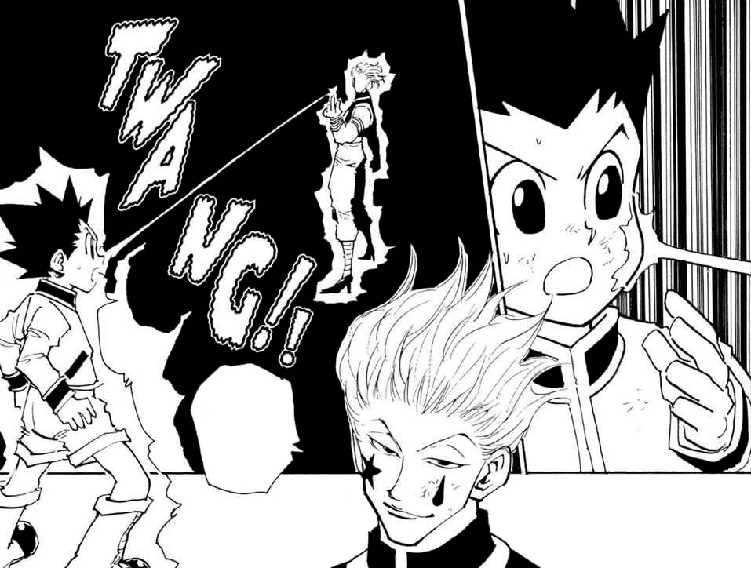
Yorknew City
Ok, now I'm just gonna speedrun this summary, I'll probs add more after some rewatches. So here's a short summary of Yorknew City (notices how its New York swapped haha):
- Gon & Killua are in Whale Island and when Killua questions Gon about who his birth mother is, Gon is affirmant that Mito is and always will be his mum which convinces Mito to give Gon a box with iron plating left by Ging (Mito doesn't like that Ging left the island).
- this box was actually inscripted with Nen, so it could only be opened with Nen(same with Wing's promise string which broke after Gon used Nen) and inserting Hunter's license. Inside is a cassette tape which plays a recording by Ging who challenges Gon to find him, a ring and a memory card
- With Killua's other brother's help, Milluki, they are able to find out that the memory card belongs to a game called Greed Island which is insanely expensive, a game that can only be played by Hunters (Nen users essentially!), and learn that copies of Greed Island are being sold in Yorknew City, where they're going to meet up with the gang lmao.
- In Yorknew City, Gon & Killua meet up with Leorio but notice presence of Phantom Troupe members, Machi and Nobunaga. Gon & Killua follow them to their temporary hideout but are immediately trapped and questioned about a 'Chain User'.
- Ok I'm just going to end the summary here before this review/analysis gets too long winded and move onto what I'm really interested in

Greed Island
- ...
Chimera Ants
- ...
Chairman Election
- ...
Succession Contest
- ...
My Thoughts/Analysis-
Ok so, Togashi's power system that he introduced to Hunter X Hunter was actually name dropped all the way back in his previous work, YuYu Hakusho.

Nen for most anime fans is known to be one of the most interesting power systems because of how fleshed out it is with any human being in the world of HxH having the ability to pick up Nen. This proves to be terrifying when you see characters like Morena Prudo in the most recent arc, the Succession Contest who with her Nen ability, Contagion is essentially able to make an army of Nen users who have all have the sole goal of destroying the entire world.
I'm so hyped for the release of more chapters by Togashi (I hope he's able to take his time considering his back injuries) because the most recent chapter's cliffhanger was so good and leaves me wanting to read more. The fact that on the Black Whale, there's so many different factions like:
-
The Phantom Troupe who are hunting down Hisoka lol.
On a side note, the fight between Chrollo and Hisoka WAS SO EPIC, Nen fights are just so exhilarating, the fact that Chrollo was prepping the fight for a whole year and was using multiple Nen abilties at the same time because of Double Face was awesome.
When I was reading the chapter at first, I thought the Sun and Moon ability that was acquired by from I think the elder in Meteor City wasn't that complicated.
After all you mark somebody either the Sun with a + or a Moon with a -, and if you touch them again with the opposite mark, they go kablooey with a longer contact time equalling a bigger explosion.
- But the fact that it was used to trick Hisoka into thinking that Chrollo was using Kortopi's Nen ability, Gallery Fake the whole time when he wasn't just blew my mind. Chrollo has the Nen ability, Skill Hunter which allows him to steal other peoples' Nen abilities given they fulfil certain conditions (which I won't go into here). He can use these stolen Nen abilities as long as he has the page to the ability open in his conjured Nen book. However, when using Double Face's bookmark, Chrollo can use up to 4 abilities at the same time (2 pages which he's already opened up to = 2 abilities + 2 pages bookmarked = 2 more abilities he has access to).
- But yeah, Chrollo over the whole course of the fight was using Black Voice (which was Shalnark's ability and it's basically a 1 hit KO if you get hit with a needle since it allows Chrollo to control them with a conjured phone), Gallery Fake (Kortopi's ability which allows you to make exact copies of anything, tho with living things you just make a fake corpse), Sun and Moon, Order Stamp (allows you to issue voice commands to puppets which are any non-living things with a head excluding corpses BUT THE FACT THAT fake corpses made from Gallery Fake count just makes this fight even more interesting) and Convert Hands (you get markings on your hands, if you touch someone with one hand marking you look like them, if you touch someone with the other hand marking they look like you BUT the markings stay on you).
- The fact that this fight kept building assumptions despite giving us most of the info about Chrollo's abilities and knowing what Hisoka is capable of is JUST AWESOME! The fact that Chrollo tricked Hisoka into thinking he was still using Gallery Fake but instead was able to keep the conjured fake corpses whilst having Gallery Fake deactivated by marking the fake corpses with Sun and Moon WAS JUST MIND BLOWING!
- OH AND, the fact that we get to learn more about post mortem nen at the end is just SWEET! I know I'm probably blabbering on for too long to a point where anybody whose reading this article can't understand what I'm saying but THIS IS JUST AWESOME!
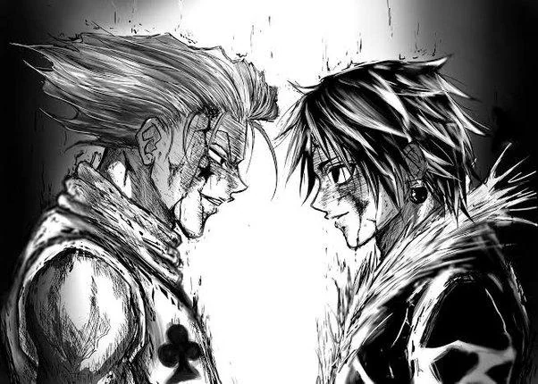
Ok back on track, Chrollo is able to beat Hisoka with 100% of the odds being in Chrollo's favour because of his prep time HOWEVER Hisoka having used post mortem nen was able to jumpstart his heart with Bungee Gum (WHY IS HIS ABILITY SO USEFUL LMAO) and now has a vendetta against the Phantom Troupe. Sadly, Kortopi and Shalnark having no access to their Nen abilities which are still in Chrollo's book + Hisoka being salty about his defeat by Chrollo = Shalnark and Kortopi being killed by Hisoka. So all the Phantom Troupe are hunting Hisoka on the Black Whale (but are separated because each one of them want to be the one to kill Hisoka for good, oh no I can see where this is going) while Hisoka is hunting down members of Phantom Troupe.
- JUST ANOTHER SIDENOTE! I've been reading up on theories and some say that the prophecy from all the way back in the Yorknew City arc by Neon sorta foreshadowed the fall of the Phantom Troupe who didn't really escape their fate + maybe there's post mortem nen at play from Neon??? Currently, Shizuku is looking rather doomed but she's with Chrollo so let's hope.
- But yeah, my opinion at the moment is that with the Spiders being spread out across tiers of the Black Whale as is, with some helping out the mafia, etc. eventually Hisoka will be able to finish off more members. Afterall, the head of the Spider Chrollo let the rest of legs, the rest of the Phantom Troupe members do their own thing while he focuses on trying to finish off Hisoka himself. If the head of the Spider is supposed to do the rational thinking and we can see that Chrollo clearly isn't thinking rationally after Kortopi and Shalnark's deaths, I don't see this going well...
-
Beyond Netero and his shenanigans:
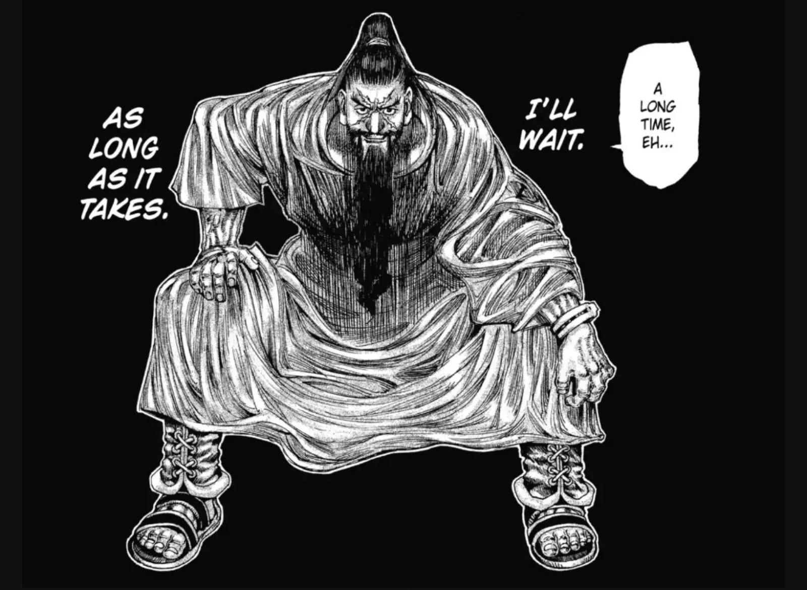
So Beyond Netero, by his name, you can tell that he's the son of late Chairman, Isaac Netero who at his prime was known to be one of the most powerful Nen users in the world and even when he was elderly was able to defeat Meruem, the Chimera Ant King (while using a bit of cheats haha).
Beyond's goal in the Succession Contest is to be able to get to the Dark Continent and has strong connections to the Kakin family we even know that somehow one of the princes happens to be Beyond's child!!!
- since for a prince to be considered legitimate is to be the child of one of the Queens, not necessarily a child of King Nasubi.
- HOWEVER, in order to enter the Succession Contest, each of the princes had to prove their inheritance by offering a drop of blood to the urn in the Seed Urn Ritual.
- So ONE OF THE PRINCES is (1) Beyond's child, (2) considered legitimate being a child of one of Nasubi's queens, (3) has royal blood!!! My mind is officially blown guys.
- Wait so does this mean that either Beyond or one of the queens has royal blood!?!?!
Also for Beyond to go to the Dark Continent, there's a number of conditions that he has to fulfil:
- Permission: He has to get permission from the V5 (well actually V6 with the newly added Kakin Empire). Well, he's got that.
- Qualifications: I guess this means that he needs skilled Hunters / Nen Users in order for the expedition to even survive in the Dark Continent. He already has a crew, we don't know exactly where they are but we know they're probably on a separate vessel, waiting for Beyond to be released from prison.
-
Means: A boat? and supplies I'm guessing which he's getting from Kakin.
However, if Nasubi has no intention of getting to the Dark Continent, instead using the Black Whale as a battleground for the deathmatch that is the Succession Contest (from Mizaistom, one of the Zodiacs who is very competent, he can already tell that the Black Whale is going to erupt into chaos, it's not an if, it's a when it's going to happen).
On the lower tiers of the Black Whale, there isn't anywhere near enough security, water or food for the thousands of people that are there. It's as if, Nasubi wants there to be a bloodbath, maybe it's sacrifices for the Seed Urn Ritual??? -
Contract: Ok so, a lot of people think this is the contract that Beyond was making with his crew to make sure everyone's happy and cooperable. However, there are also a lot of people who think that this contract is ACTUALLY REFERRING to the contract made with the Gatekeeper (race of magical beasts) who guards who leaves and enters Lake Mobius.
For anyone who wants to go to the Dark Continent, it's essential to have a Guide who is summoned by the Gatekeepers. Also, for anybody who comes back, the Guide will bring back a calamity to humanity.
There are already 5 CONFIRMED calamities in the human world which all have a higher rank than the Chimera Ants:
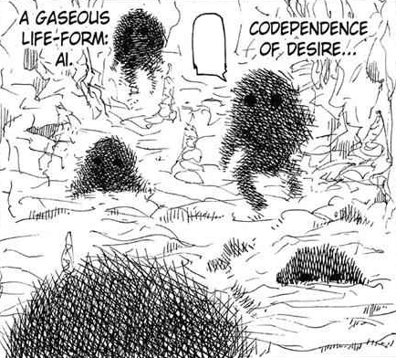-
Ai: a gaseous lifeform that can possess people and has a wish making ability: however the more complex/higher benefit of the wish, the heavier the cost is.
This is the calamity we know most about because Alluka, Killua's sister, is possessed by Nanika, one of these Ai entities. It's theorised that Nanika is the calamity that Isaac Netero, Zigg Zoldyck and Linne brought back from their undocumented expedition to the Dark Continent. Rank A. - Brion: it's a botanical weapon and returned from the United States of Saherta's expedition in Labyrinth City. Rank B+.
-
Zobae Disease: it's a disease that grants immortality to whoever is infected with it.
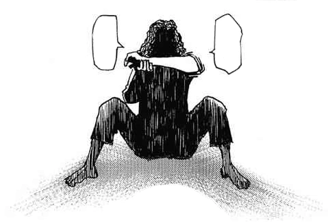
The consequences of having the Zobae disease is that you lose the ability to eat normal food. It was brought back by Beyond Netero's last expedition to the Dark Continent 50 years old, with one Hunter contracting the disease. This Hunter is still alive but due to self cannibalism has lost their sanity. Rank B+. - Hellbell: We don't know much about this calamity because out of the 1000 people sent on the expedition for Nitro Rice, 99% of them died to Hellbell before ever reaching the place where Nitro Rice grew with only 11 people returning who didn't encounter Hellbell. Hellbell's appearance is a snake which has the lower part of it's body split into two tails. The only thing we know about it's ability is that it infects people with homicidal desires. Rank A.
- Pap: a beast that keeps people as pets which does this by connecting to humans via a cable and giving them pleasure in exchange for Nen / life energy. Rank A.
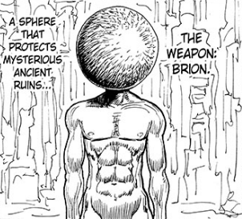
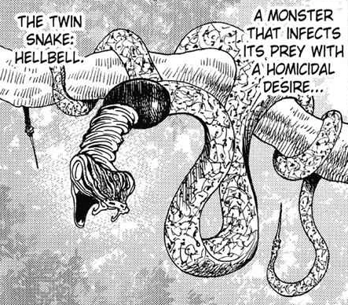
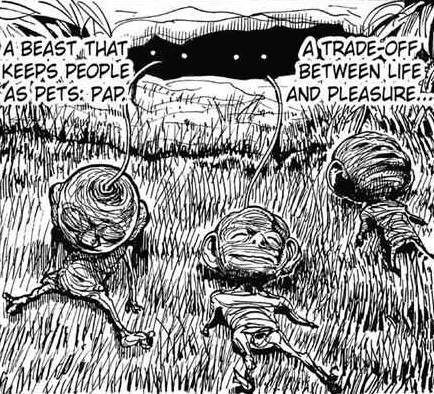
But this isn't even the scariest fact. These are only the CONFIRMED great calamities. What about all the undocumented expeditions to the Dark Continent? What if there are more calamities out there in the human world? Actually, it's not an if, it's a where the hell are they? I'm still shocked how everyone in the world of HxH are still even alive bro.
So, you're probably thinking why are people going to the Dark Continent? Well, there's a lot of treasure that can come from it if people take the risk:
- Unmanned Rock: located in the northeast shore of Lake Mobius in the mountains, it's a rock where a small bit of it can generate enough electricity to power 10000-20000 homes simultaneously a day / 20 megawatts. Guarded by Pap, where 7 out of 1000 people returned from Begerossé Union's expedition.
- Herb for All-illnesses: name sorta explains itself, location in the north shore of Lake Mobius, in a labyrinth city. It's guarded by Brion where only 2 survivors, from the United States of Saherta's expedition remained.
- Nitro Rice: located in the far southeast shore of Lake Mobius in swamps, it can extend one's lifespan. However, it's guarded by Hellbell where from the Federation of Ochima's expedition, only 11/1000 people returned.
- Trinity Elixir: located in the southeast shore of Lake Mobius, it's "the mother solution for all sorts of liquids". I'm not exactly sure what this means but I guess it means it's able to transform or create any liquid? It's guarded by Ai with only 3 survivors from the Mimbo Republic's expedition.
- Metallion: located in the south shore of Lake Mobius, it is known to be an alchemy plant (not sure what this is supposed to do again). On the Kukan'yu Kingdom's expedition, it brought back the Zobae disease with 6 survivors including Beyond Netero and the infected specimen.
Ok so, I might have went a bit off topic but I basically gave a summary of the threats and treasures of the Dark Continent. But those threats/calamities are only the entities around Lake Mobius. Imagine the beasts/creatures deeper in the Dark Continent. Ok ok I'll get back on topic, so Beyond Netero most likely has several other ways to get to the Dark Continent other than the Black Whale.
- Kakin Empire: The Princes and their entourage:
- Morena and the Heil-Ly family, as well as the other mafia factions, Xi-yu and Cha-R families:
- The Hunter Association:
- Pariston:
- Kurapika:
I'm going to finish the rest at a later date.
Nen System Analysis